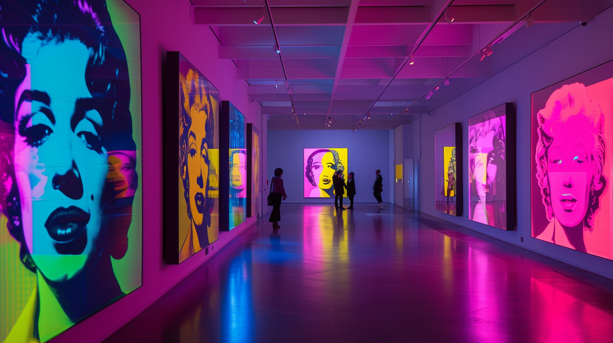
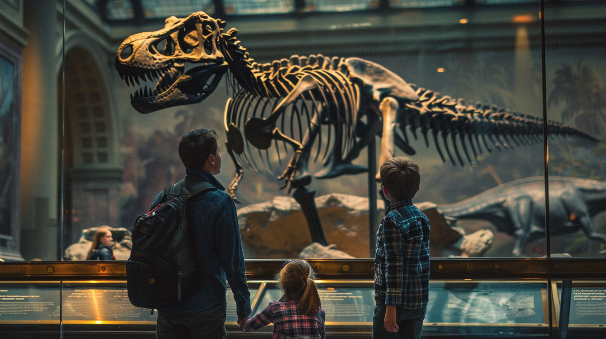

Discover how AI for travel can provide real-time translation at museums, making foreign language exhibits accessible to all visitors.

Artificial Intelligence (AI) is revolutionizing the travel industry, transforming how we explore and experience new cultures. One of the most exciting advancements in this field is the application of real-time AI translation in museums. This technology has the potential to break down language barriers and create more inclusive, engaging, and educational experiences for visitors from around the world.
As an avid traveler and museum enthusiast, I’m thrilled by the possibilities that AI translation brings to cultural institutions. The ability to understand exhibits, artifacts, and artworks in one’s native language, regardless of the country or museum, is a game-changer for global tourism and cultural exchange.
Language differences have long been a significant obstacle for international visitors to museums. Many institutions offer audio guides or written materials in a limited number of languages, but this approach falls short of meeting the needs of a diverse global audience. Language barriers can:
Real-time AI translation addresses these issues by providing instant, accurate translations of exhibit information, guided tours, and even conversations with museum staff.
AI translation technology dramatically enhances the museum experience for international visitors by:
AI translation relies on advanced natural language processing (NLP) and machine learning algorithms. These systems are trained on vast amounts of multilingual data, enabling them to understand and translate text and speech with high accuracy. Key components of AI translation technology include:
Recent advancements in these technologies have significantly improved the speed, accuracy, and natural flow of AI translations, making them suitable for real-time applications in museum settings.
Museums are implementing AI translation technology in various ways:
These tools can translate exhibit labels, informational panels, audio tours, and even facilitate conversations between visitors and museum staff.
TravelAI is at the forefront of developing AI solutions for the travel industry. The company’s mission is to break down language barriers and enhance cultural experiences for travelers worldwide. With a team of experts in AI, linguistics, and travel, TravelAI is committed to creating innovative technologies that make global exploration more accessible and enjoyable.
TravelAI has partnered with several renowned museums to implement its cutting-edge translation technology:
These partnerships demonstrate TravelAI’s commitment to enhancing cultural experiences and making art and history more accessible to a global audience.

AI translation services in museums offer several key features:
The implementation of AI translation technology benefits both museum visitors and the institutions themselves:
For visitors:
For museums:
During a recent visit to the Louvre in Paris, I had the opportunity to use TravelAI’s mobile app for real-time translation. The experience was seamless and intuitive. I simply pointed my smartphone camera at exhibit labels or informational panels, and the app instantly overlaid the text with an English translation.
The translations were remarkably accurate, preserving the nuanced descriptions of artworks and historical context. I was particularly impressed by the app’s ability to handle specialized art terminology and maintain the poetic quality of certain descriptions.
Using AI translation significantly enhanced my museum experience. I found myself spending more time with each exhibit, delving deeper into the stories behind the artworks. The technology allowed me to appreciate subtle details and historical connections that I might have otherwise missed due to language barriers.
Moreover, the AI translation facilitated impromptu discussions with other visitors from different countries. We were able to share our interpretations and insights, creating a truly international and collaborative museum experience.
The success of AI translation in museums paves the way for broader applications in the travel industry:
Beyond museums, AI translation has the potential to enhance experiences at various cultural and tourist attractions:
Real-time AI translation is set to transform the way we experience museums and cultural attractions around the world. By breaking down language barriers, this technology creates more inclusive, engaging, and educational experiences for visitors from all backgrounds. As companies like TravelAI continue to innovate and partner with cultural institutions, we can look forward to a future where language differences no longer hinder our ability to explore and appreciate the world’s rich cultural heritage.
Embracing AI technology in museums and other cultural venues is crucial for creating truly global, accessible, and immersive experiences. As travelers, we stand to gain a deeper understanding and appreciation of diverse cultures, fostering greater empathy and connection across borders.
I encourage you to seek out museums and cultural attractions that offer AI translation services. These technologies open up new worlds of knowledge and appreciation, allowing us to engage with art, history, and culture in ways that were previously impossible for many international visitors.
To learn more about the exciting developments in AI for travel, visit TravelAI. Explore their latest innovations and discover how AI is shaping the future of global exploration.
Have you had experience with AI translation during your travels? We’d love to hear about it! Share your stories and insights in the comments below or on social media using #AITravel. Your experiences can help others discover the benefits of this transformative technology and inspire further innovations in the field of AI for travel.